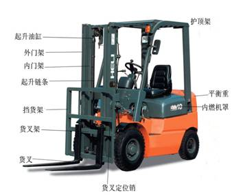

双进深和多进深货架；驶入型货架；高密度流动货架（又称活动货架，货架底部安装轮子和驱动系统，沿地面固定的轨道移动。多排架架紧靠在一起，中间不留通道，在存取货物时只要移动货架，让出一行通道，即可进行装卸作业，因此又称为单通道货架；重力货架；旋转货架；驶过式货架；重型货架（每一棚位装载的重量大于500KG）；轻型货架（低于150KG）；中型货架；积层式货架：用用货架支柱做为支撑，扩充为上下层楼；托盘流动式货架：托盘由货架的一边放入，在滚轮上滑动至货架的另一边；
日本把立体仓库分为低层（H<5米），高层（H＝5-15米）和高层（H>15）；并以货位数划分：2000以下为小型，2000-5000为中型，5000以下为大型；
货架按加工形式分为组合式和焊接式货架，按工业和商业用途可分为仓储货架和超市货架；仓储货架可分层架、托盘货架、阁楼式货架、悬臂式货架、移动式货架、重力式货架、贯通式货架、旋转式货架
3.1 装卸搬运设备可分为：起重机、输送机、搬运车辆（叉车（又叫铲车）和牵引车）、人力搬运车（杠杆式手推车、手推台车、手动托盘搬运车、手推液压堆高车、手动液压升降平台车）；手动液压手动车的又称地牛，需考虑叉长（1200mm）、叉宽(680mm)、叉高(80mm)；
3.2 传统的货架系统使用平衡重叉车车体后部设置重锤），通道宽度一般在3米以上，占用的面积超过货架本身，仓音面积利用率不到40%。限于叉车的提升能力，堆货高一般3-4托盘，仓间空间利用率也很低，为现代物流企业所难以容忍；
关键在于叉车。解决途径得从改进叉车的性能出发，压缩通道，增加堆高。于是出现了窄通道和（Narrow Aisle，简称NA）和极窄通道（Very Narrow Aisle，简称VNA）货架系统。本文物流界通常把8英尺（2.44米）以下的通道称NA，把5-5.5英尺（1.52-1.68米）的通道称VNA；与之相配应的叉车称NA和VNA叉车。
3.3 NA叉车：前移式叉车（Reach Truck）：平衡重叉车依靠车身的进退送取托盘，而前移式叉车则利用它的前移装置，车身不需在货架前移动。车体有两条前伸并带有承重轮的插腿，门架和叉架安装在插腿中间，取货时门架可身前移伸，取货后缩回。一般前移式叉车都能就地回转，因此通道宽度只需略大于叉车的总长（包括托盘在内），一般约2米，有的甚至更小；前移式叉车按其不同的前移装置，有两种类型：一类是前移门架（Moving Mast）,以门架的进退来装卸托盘；另一类是剪式装置（Pantograph）,采用一种剪刀式可以伸缩的推进装置。前移门架叉车的前后轮较大，适用于各种地，最大载荷2-2.7吨，最大提升高度达8.16-10.8米）（最大载荷时，不能提升到最高高度；）；而剪式装置叉车的插腿前轮较小，在地面较差的场地作业不免逊色；因而，从货架到站台，往往需要另一类叉车进行驳接，多增环节；且剪式推进装置具有双移进（double reach）的可能，也能用于双进深货架；
3.4 VNA叉车：上述前移式叉车，装卸作业仍需做90度回转。VNA叉车与此不同，改变了这种堆垛作业，让货叉转向，向两侧 装卸货架。这样，所需通道得以进一步缩小，只需略宽于车身即可；1 回转货叉型（也叫转叉式叉车：turret truck）：它的货叉设在一个可以转动80度的转向机械装置上，可作三向堆垛作业（前左右）；转叉式叉车的荷载一般在1.36吨，提升高度40-45英尺（12.2-13.7米），通道60-66英寸（1.52-1.68米），转叉式叉车的底部两侧设水平导向轮（有的门架中部也有），两侧货架设相应的导轨；2 摇转门架型（swing-mast）叉车：刚开始，它只是一种货叉可随门架摇转的平衡重叉车，门架只能向一个方向（右侧）摇转90度，称旋转门架（pivot-mast）,可向左右两个方面作装卸作业；不需导轨和制导系统，对地面的平整没有过高要求，运行速度高于前移式和转叉式叉车；动力兼电瓶、液化气和柴油多种；提升高度10米（提升高度难及转叉式叉车），走道宽1.5米；手扶式叉车：一种小型电瓶叉车，以手扶控制柄进行控制；叉车属具：安装在叉车起升装置上以替代货叉的附属工具。通过较简捷的方法更换各种属具。常用的叉车属具有：器材（用于装卸环、卷装货物）；吊勾（用于起吊异形物体）；推拉器（用于装卸纸托盘）；夹抱器（用于无托盘作业；旋转夹抱器等；
4.1 平托盘：亦称平板式托盘，旧称铲板，是一种最重要的配合叉车装卸作业的集装单元器具。通常平托盘多为木制，由铺板和纵粱两部分组成。木制平托盘的类型有：单面使用型和双面使用型，双向进叉型和四向进叉型，无翼、单面带翼等多种。
4.2 柱式托盘：在平托盘的四角设置立柱，叠堆时支承上层托盘的负荷，使下层货物免受上层货物的重压。柱式托盘有固定式、拆装式、和折叠式三种；柱式托盘可以叠堆4-5个高，能节约空间，托盘货物不受重压，不受外形限制，可用于易碎或易形货物；叠堆后还可以作任意存取托盘内的货物，形同货架；
4.3 箱式托盘：设有箱壁的柱式托盘。箱式托盘有固定式、拆装式和折叠式等几种。为减轻自重，一般箱式托盘多采用金属网片或栅栏作为箱壁。为方便存取托盘内货物，一般采用三侧固定，一侧可以开启或半开启的形式；箱式托盘具有很多优点：适用于外形不规则和不能承压的货物（如机械零部件和蔬菜等）；有利于防止货物的倒塌，可双叠堆3-6个高，排列堆放，形同货架；
4.4 带轮箱式托盘：底盘设置车轮的箱式托盘，又称笼车，有固定式、拆装式和折叠式等几种；
水枪：一种增加水流速度、射程和改变水流形状的射水工具。由管牙接口、枪管和喷嘴组成。使用时可将水枪的管牙接口和水带接口相接；
水带：连接消防泵或消火栓与水枪等喷射装置的输水管线；
消火栓：分室内和室外两种，室内消火栓是截止阀类的一种阀门，遇有火警时，将水带一端的接口接在消火栓出口上把消火栓手轮按开启方向旋转。室外消火栓分为地上式和地下式两种，使用时使用专用扳手打开出水口门盖，接上水带或吸水管，再用专用扳手打开阀塞，始可以供水；
二氧化碳灭火器，酸碱灭火器；泡沫灭火器；干粉灭火器；1211灭火器；
离子烟感火灾探测报警器；光电烟感报警器；温感报警器；紫外火焰光感报警器；红外火焰光感报警器；自动喷洒灭火装置；
叉车、货架、辊子货台、辊子输送机、出入库台、自动导引小车、堆垛机、转移台车；货架之间使用辊子输送机或或堆垛机；
可调卸货平台：有手动的机械两种；掌上封箱机；
9.1 物流中心的合理配置；
9.2 物流路线的合理选择；
| 旧 | 新 | ||
| 叉车齿长 | 1.35 | 1.22 |  |
| 齿高 | 0.045 | 0.05 | |
| 剩长 | 2.7 | 2.75 | |
| 总长 | 4.095 | 4.02 | |
| 叉框宽 | 1.23 | 1.23 | |
| 地面到框高 | 1.12 | 1.15 | |
| 框到升降杆高 | 1.48 | 0.95 | |
| 总高 | 2.6 | 2.1 | |
| 座椅附近顶篷高 | 2.15 |
3 常用叉车起重：1-10T；
物流标准化
40*60cm*5=100*120cm
2 托盘:(100*120cm)
3 车斗；
20尺柜：8*8*20foot
40尺柜：8*8*40foot